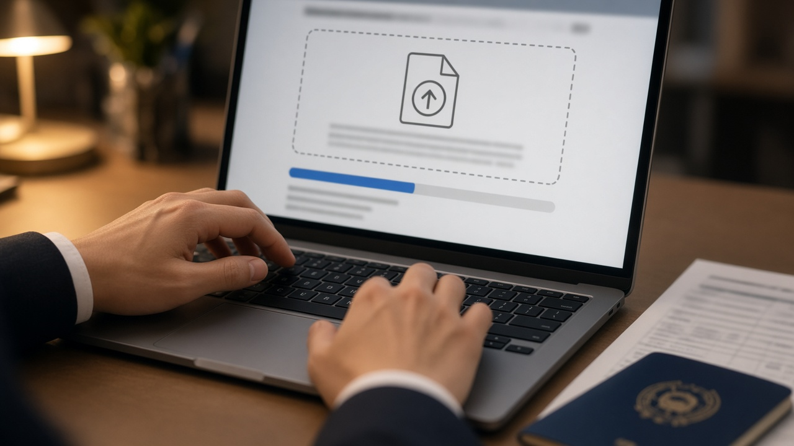
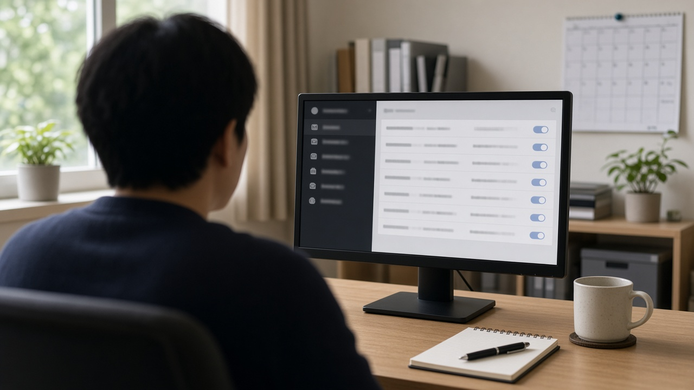

악성코드 검사 사이트 바이러스토탈에 올린 파일, 유료 회원이 내려받을 수 있어요 대통령 순방단 명단 노출로 본 업로드 전 확인할 점

메일로 받은 첨부파일이 수상해서 온라인 악성코드 검사 사이트에 한번 올려 볼까 고민해 본 적 있으실 거예요.
프로그램을 따로 깔지 않아도 되고, 여러 백신 결과를 한 번에 보여 주니 편리하죠.
그런데 11월 초, 대통령 순방단 168명의 여권번호가 담긴 파일이 바로 이런 검사 사이트에 5개월 동안 올라가 있었다는 보도가 나오면서 이 편리함 뒤에 있는 구조가 주목을 받고 있어요.
오늘은 검사하려고 올린 파일이 왜 남에게 보일 수 있는지, 어떤 파일은 올리면 안 되는지, 회사에서는 무엇을 점검하면 좋은지 정리해 볼게요.
순방단 168명 명단이 검사 사이트에 5개월 동안 올라가 있었어요
뉴시스와 미디어오늘 보도에 따르면 6월 2일 악성코드 분석 서비스 바이러스토탈에 공군 1호기 탑승자 명단 파일이 올라왔어요.
파일에는 대통령 부부와 정부 인사, 경호원, 출입기자 등 168명의 이름과 소속, 생년월일, 여권번호, 여권 발급일과 만료일이 들어 있었다고 해요.
이 파일은 11월 초 보도가 나온 뒤 내려받기가 막히고 삭제됐어요.
외교부는 11월 3일 브리핑에서 현재로서는 해킹이라기보다 유출로 파악하고 있다고 밝혔고, 경찰은 정식 수사로 전환해 누가 어떤 경로로 올렸는지 확인하고 있어요.
11월 4일 기준으로 업로드 경위는 공식적으로 확인되지 않았어요. 다만 이 일로 검사 사이트에 파일을 올리는 습관 자체를 돌아봐야 한다는 이야기가 많이 나오고 있어요.
검사하려고 올린 파일이 왜 남에게 보일 수 있을까요
바이러스토탈은 구글 계열 회사가 운영하는 서비스로, 70개가 넘는 백신 엔진과 차단 목록으로 파일과 인터넷 주소를 한꺼번에 검사해 줘요.
바이러스토탈 공식 안내 문서에는 제출된 파일이나 페이지의 내용이 유료 고객에게 공유될 수 있다고 적혀 있어요.
새로운 악성코드를 빨리 찾아내기 위해 보안업체와 연구자들이 쌓인 파일을 검색하고 내려받아 분석할 수 있게 만든 구조예요.
그래서 검사 결과만 나에게 오는 게 아니라 파일 자체가 그 서비스 안에 남아 자격 있는 유료 이용자가 찾아볼 수 있는 상태가 돼요.
연합뉴스 보도를 보면 메타디펜더 클라우드나 조티스 멀웨어 스캔 같은 다른 온라인 검사 서비스도 일반 검사로 낸 파일을 백신업체나 승인된 연구자와 공유한다고 안내하고 있어요.
서비스마다 공유 대상과 권한은 다르지만, 내 컴퓨터 안에서 검사하는 백신과 달리 파일이 외부 서버로 나간다는 점은 같다고 보면 돼요.
이런 파일은 온라인 검사 사이트에 올리지 마세요
전문가들이 공통으로 꼽는 건 주민등록번호나 여권번호 같은 개인정보가 담긴 파일이에요.
회사 내부 문서, 계약서, 견적서, 고객 명단, 급여나 인사 자료도 마찬가지예요.
아이디와 비밀번호, 인증서, 계좌 정보가 들어 있는 파일은 말할 것도 없고요.
실제로 2024년에는 중앙선거관리위원회 외주업체 직원이 직원 3000여 명의 정보가 담긴 점검 자료를 같은 사이트에 올려 인적 사항이 노출된 일도 있었어요.
이런 파일이 의심스럽다면 내 기기에 설치된 백신으로 검사하거나, 회사라면 사내 보안 담당자나 내부 보안 시스템으로 확인하는 게 안전해요.
꼭 외부 서비스를 써야 한다면 그 서비스에 비공개 검사 기능이 있는지, 올린 파일이 다른 이용자나 보안업체에 공유되는지 먼저 이용 안내를 읽어 보세요.

회사에서는 자동으로 올라가는 설정부터 확인해 보세요
이번 일에서 눈여겨볼 부분은 사람이 직접 올리지 않아도 파일이 넘어갈 수 있다는 지적이에요.
보안뉴스는 일부 이메일 솔루션이 첨부파일 검사를 바이러스토탈에 자동으로 연동하는 방식으로 제공한다고 전했어요.
뉴시스도 일부 보안 솔루션이 초기 설정에 파일 자동 공유 옵션을 담고 있어 설정을 잘 살피지 않으면 자료가 공유될 수 있다는 업계 의견을 소개했어요.
그러니 작은 회사나 가게라도 쓰고 있는 메일 서비스와 보안 프로그램의 설정 화면에서 외부 분석 서비스로 파일을 보내는 옵션이 켜져 있는지 한 번 확인해 보면 좋아요.
직원들에게는 수상한 첨부파일을 개인적으로 외부 사이트에 올리지 말고 담당자에게 먼저 알리도록 간단한 규칙을 정해 두는 것도 도움이 돼요.
이미 올렸다면 이렇게 대처해 보세요
먼저 그 파일에 어떤 정보가 들어 있었는지 정리해 보세요. 비밀번호나 계정 정보가 있었다면 바로 비밀번호를 바꾸는 게 우선이에요.
보안뉴스에 따르면 기밀문서가 올라간 경우 정해진 절차를 거쳐 운영사에 삭제를 요청할 수 있어요. 다만 삭제 전에 이미 누군가 내려받았다면 되돌릴 수는 없어요.
회사 자료였다면 혼자 해결하려 하지 말고 보안 담당자나 대표에게 바로 알리는 게 피해를 줄이는 길이에요.
여권번호나 주민등록번호처럼 고유식별정보가 노출됐다면 이를 악용한 사칭 연락이나 표적형 피싱 메일이 올 수 있으니 한동안 낯선 연락을 더 조심해 주세요.
오늘 내용은 11월 4일 기준 보도와 바이러스토탈 공식 안내를 정리한 일반 정보예요. 각 서비스의 공유 범위는 바뀔 수 있으니 이용 전에 해당 서비스의 최신 안내를 꼭 확인해 주세요.
참고 자료 바이러스토탈 공식 안내 문서 How it works, 뉴시스와 미디어오늘 2026년 11월 3일 보도, 보안뉴스 대통령 개인정보 유출 파문 보도, 연합뉴스 2026년 11월 3일 악성코드 검사 정보 노출 우려 보도, 채널A 보도
태그 바이러스토탈 악성코드검사 개인정보유출 여권번호유출 정보보안 첨부파일검사 기업보안 보안수칙 파일업로드주의 사이버보안